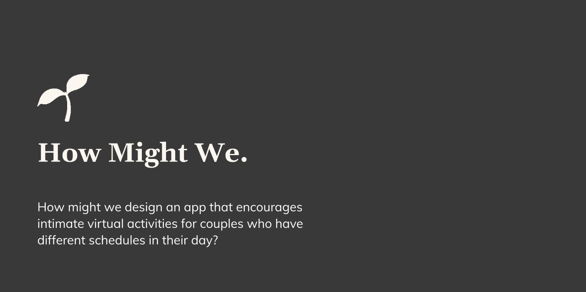
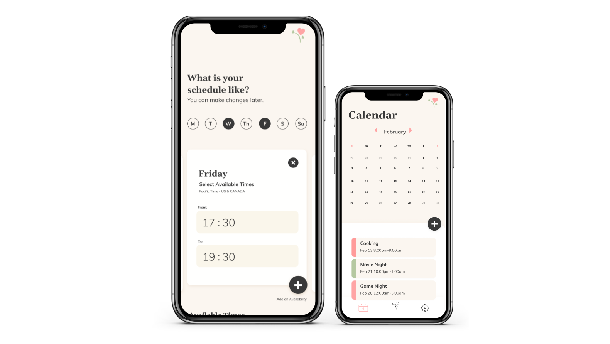
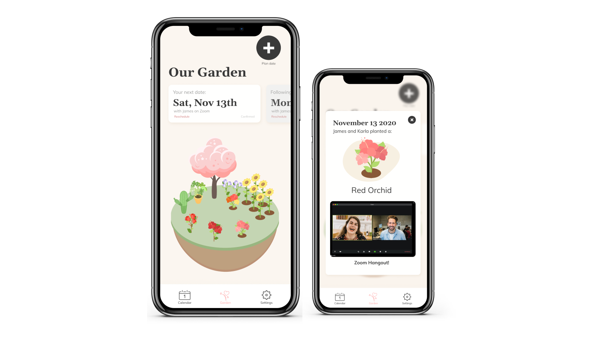

Project Overview
Prompt
“To envision an experience that provides a fun engaging virtual valentine’s day experience for long distance couples bringing them closer together by heart.”
Distant Garden is a mobile application where couples in long distance relationships grow a virtual garden together where each individual plant collects their memories. Looking forward to creating a beautiful garden full of memories, this innovative application can encourage couples to plan their activities in a fun way and spend time together virtually.
Distant Garden was made as part of University of Washington’s DubsTech Protothon.
Research Process
Given that we only had 24 hours to come up with a solution, we conducted secondary research on the Reddit page r/LongDistance/ and read people’s stories about being in a long distance relationship.
We found that our target audience are people between the ages of 18-30. People within this age group experience long distance relationships due to one moving away for school or work. This makes it difficult for the pair to physically spend time together because being in different time zones makes it hard to schedule quality time together, which as a result discourages couples from deepening their connection with one another.
Design Process
Based on our group’s research, I developed a how might we statement to help our group ideate a design solution. This how might we statement lead me to come up with the concept of growing plants as a way to encourage couples to plan and schedule virtual dates together. I wanted to create an application that will be fun for couples to look forward to using, so I wanted to treat this application as if it were a mobile game which couples can play together since after all, games are fun! I was inspired by plant growing apps such as Forest, an app that helps users battle phone addiction by earning credits by not using their cell phones and caching in those credits to plant a tree. Expanding on this idea, I came up with the concept where couples can plan their dates through the app and after their wonderful date, they can plant a virtual plant in their garden as a reward for their achievement.
Based on this concept, our group created a mind map to integrate and refine the concept further, making it more appropriate for the purpose of the app. We also created a user-flow diagram which helped us to structure the features and user interactions of the app and produce wireframes for the layout design of the application
Visual Design
As the lead visual designer, I opted for rounded serif and sans-serif fonts to create a classy appearance of the application. I wanted the fonts to evoke a feeling as if the users are on a fancy and lovely date with each other! The colour scheme I curated represents both nature and love, which fits the concept of our app. I also created the logo and drew plant illustrations for Distant Garden in Adobe Illustrator.
Feature Breakdown
I then helped to create a high-fidelity mockup of Distant Garden’s Interface in Figma, and was responsible for prototyping the interaction design within the app and ensuring the prototype was functional at the end of the hackathon.
Efficient Scheduling Process
We looked at other scheduling apps to give us an idea on how they facilitated the scheduling process. For Distant Garden's scheduling feature, the user can indicate the times they are available during the week and their partner can do the same by selecting a day of the week and inputting a period of time they are available that day. The couple’s mutual availability will be generated and shown to both of them.
Promote Intimacy through Unified Goal
Encourage and reward couples for spending quality time together by mutually contributing to the growth of their garden. Each garden plant holds a memory the duo can reflect on. I looked at plant growing apps to understand what criteria needs to be met in order to grow a virtual plant. In this feature, a plant gets planted on the Distant Garden platform after a successful date, then the user can click on that plant to view a momento such as a photo from their date.
Reflection
DubsTech Protothon 2021 was the very first hackathon I participated in. My team ended up winning 4th place out of 55 teams worldwide and receiving an honorable mention! Distant Garden gave me confidence with my work in UX/UI design and taught me how to tackle a real-life problem quickly and efficiently. However, the final product was definitely not without its challenges. Given that we only had 24 hours, we relied on secondary research as a basis to develop a solution to the prompt. If we were given more time, we would have definitely conducted primary research such as developing a survey for potential users, user interviews, and also reaching out to others for user testing. I also wished we created an even more detailed user-flow, as I believe there are a lot more features that we could integrate. Feedback we received from the judges was that we could include a feature that imports the user’s calendar from an external website from the scheduling feature. The initiative and creative energy that came out of this project was very fulfilling!
Final Deliverables
Click me to view the full working prototype of Distant Garden!More Projects
Web Design/Development
Cats & Coffee
A fictional website for a Cat Cafe, Cats & Coffee, offering services such as coffee beans for purchase and cat adoptions.
VIEW CATS & COFFEE